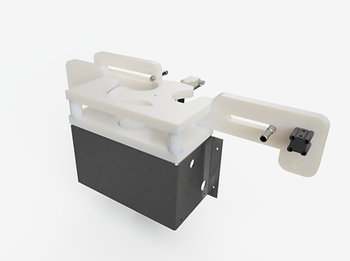
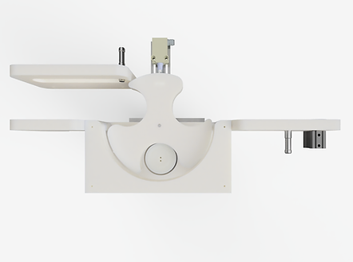
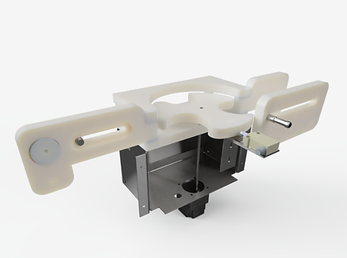

AutoRejection
Node-RED automation system with hardware integration and a custom dashboard UI

Front
Top
BackOverview
A Node-RED based automation system for processing and routing data flows. Integrates with physical hardware via Arduino microcontrollers and exposes a live dashboard through Node-RED's UIBuilder module.
Flow logic is defined visually in Node-RED and backed by JavaScript processing scripts. Supports standalone operation and networked deployment modes.
Stack
Components
- Node-RED flows for visual automation logic
- Arduino hardware modules (standalone and networked variants)
- JavaScript file processing scripts
- UIBuilder dashboard for real-time monitoring
- Shell scripts for Node-RED deployment and updates
Hardware
- Arduino microcontrollers for physical I/O
- StandAlone and WildGoose board configurations
- Integrates with the broader MAP equipment ecosystem